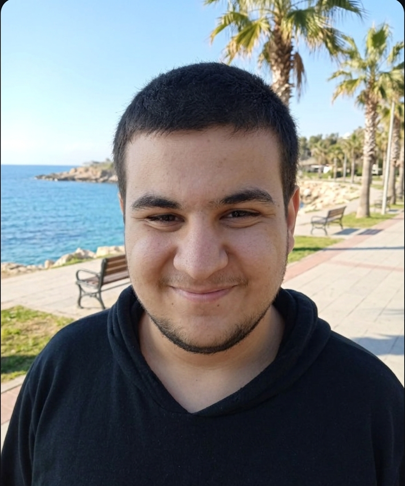

Şu an üniversitede Bilgisayar Programcılığı okuyorum. Eğitim hayatım boyunca teorik derslerin yanında işin mutfağına, yani pratik projelere ağırlık vermeye çalıştım. Yazılımın yanında siber güvenlik, web geliştirme ve Linux sistemler (özellikle Arch tabanlı yapılar) üzerinde vakit harcıyorum. Teoride gördüğüm şeyleri Oyun Bulutu gibi kendi geliştirdiğim projelerle pratiğe dökmek benim için en iyi öğrenme yöntemi oluyor.
Oyunlar benim için sadece vakit geçirme aracı değil; arkasındaki tasarım süreçleri, oyun motorlarının çalışma mantığı ve hikaye anlatımları her zaman daha çok ilgimi çekti. Oyun Bulutu projesi de tam olarak bu merakın bir sonucu. İnternette sadece oyun satılan ya da düz haber geçilen yerlerin ötesinde, oyun kültürünü ve tasarım detaylarını kendi penceremden aktarabileceğim bir alan oluşturmak istedim. Ve tabii ki programlama temelleri dersimden yüksek not almak istedim.
Bir projeye başladığımda bazen teknik detaylarda ve "kusursuz olsun" fikrinde çok fazla kayboluyorum. Kodun arkasındaki bir detayı veya içerikteki küçük bir noktayı takıntı haline getirmek bazen iş çıkarma sürecimi yavaşlatabiliyor. Ayrıca zaman yönetimi konusunda kendimi hala eğitiyorum; bir şeye odaklandığımda saatlerin nasıl geçtiğini fark etmeyip diğer planları sarkıtabiliyorum ama bunu istikrarlı adımlarla aşmaya çalışıyorum.
Oyun Bulutu'nu sadece bu şekilde statik bir web sayfası olarak bırakmak istemiyorum. İleride platformu daha interaktif, kullanıcıların da dahil olabileceği bir yapıya taşımak planlarım arasında. Ayrıca oyun tasarımlarını ve oyunların arkasındaki hikayeleri derinlemesine inceleyen belgesel tarzında video makaleler (video essay) hazırlayıp, bu sayfayı o içeriklerin de merkezi haline getirmeyi hedefliyorum.